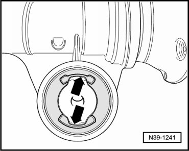
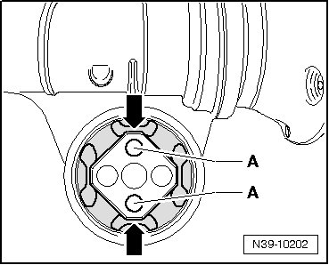

Bonded Rubber Bushing, Installed Position
Bonded Rubber Bushing, Installed Position
Bushings with 2 Recesses

- The recesses in the bushing must be vertical relative to the final drive - arrows -.
Bushings with 4 Recesses

The smaller recesses - arrows - and smaller holes - A - of the bushing must be vertical relative to the final drive.